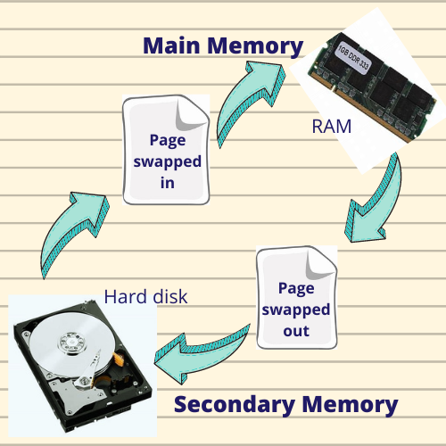

What is a page?
For non-contiguous memory allocation, the Logical address Space is divided into fixed-size blocks, called pages.
When a page fault occurs, the required page has to be brought from the secondary memory. If all the frames of main memory are already occupied, then a page has to be replaced. The page replacement algorithm decides which memory page is to be replaced.

For non-contiguous memory allocation, the Logical address Space is divided into fixed-size blocks, called pages.
The Physical Address Space (Main Memory) is conceptually divided into a number of fixed-size blocks, called frames.
Paging is a memory management scheme that eliminates the need for contiguous allocation of physical memory.
Page fault - A page fault occurs when a page referenced by the CPU is not found in the main memory.
First Come First Serve
Optimal Page Replacement
Least Recently Used
Least Recently Used